|
Real-Time View of the VRVS System
The MonaLisa global VRVS-Client is using the Jini discovery mechanism to find all the active reflectors and presents a set of global views of the system:
3D Globe Views
The currently used topology and the quality of the connections with the peers is shown in real-time.
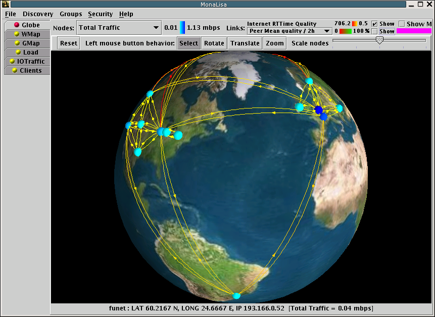
The real-time network traffic for each reflector is shown together with links qualities obtained from ABPing module.
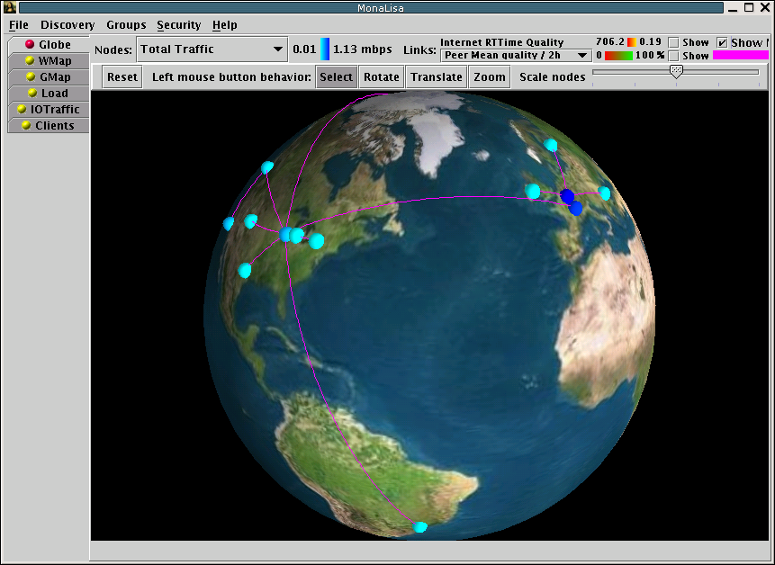
The Minimum Spanning Tree that connects all the reflectors is computed in Real Time.
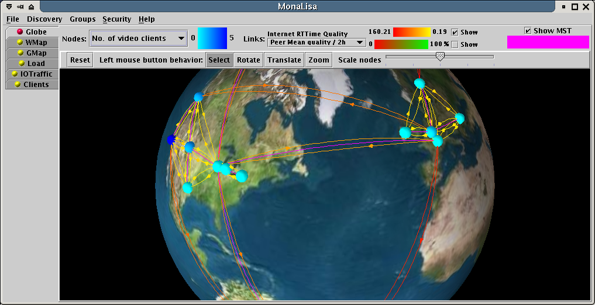
The Minimum Spanning Tree is computed in Real Time based on the quality of the links between the reflectors.
World Map View
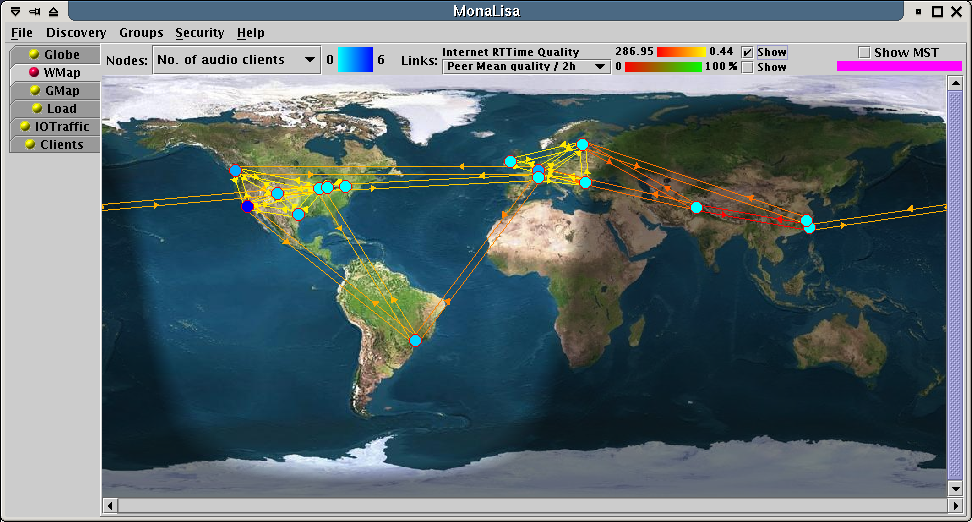
The system is used to deploy monitoring agents for the connections qualities between a dynamically defined set of reflectors.
This client is also able to compute a minimum spanning tree, using the same code that
ReflRouter client uses. The MST is displayed on the GUI to allow observing at any moment
if the current selected tunnels provide the best performance.
Graph Map View
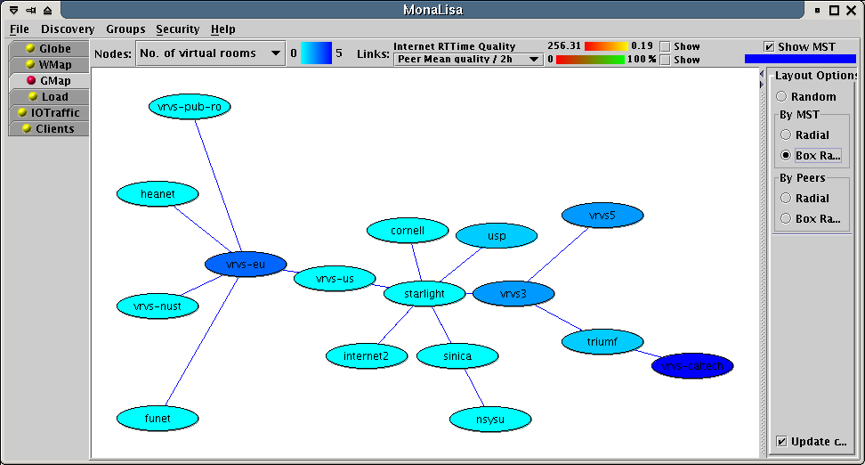
The Minimum Spanning tree is calculated in real-time.
Global Load View
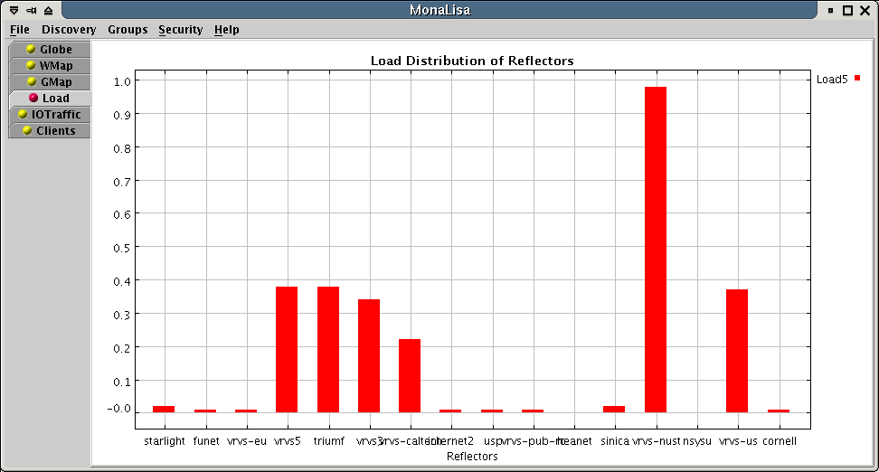
The Real-Time Load of the reflectors.
Global I/O Traffic View

The Real-Time I/O traffic of the reflectors.
Global Clients View
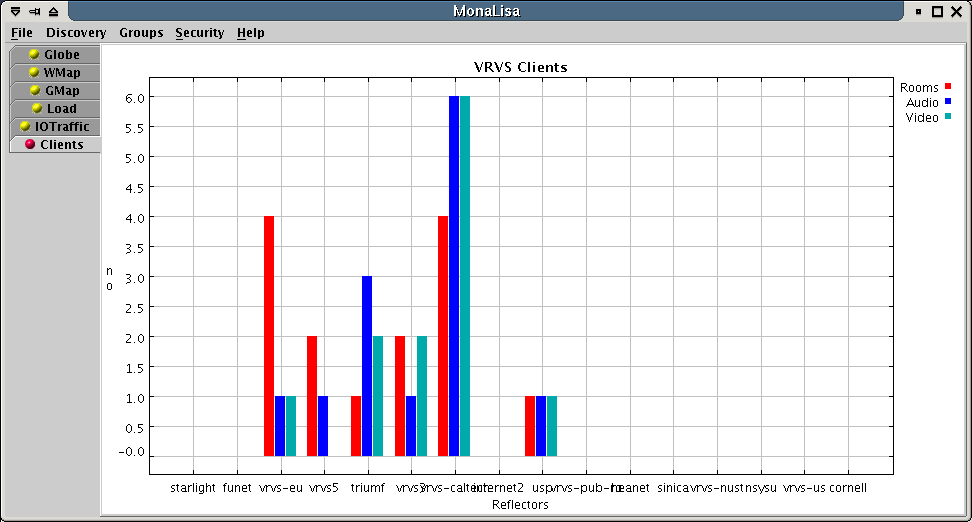
The number of audio, video and virtual rooms for each reflector.
Reflector properties window
If a reflector is clicked on Globe, World Map or Graph View, a properties window pops-up:

History with peer links quality.
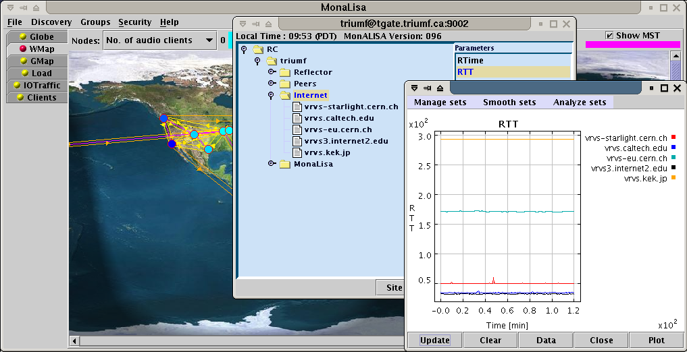
History with RTT computed by ABPing module.
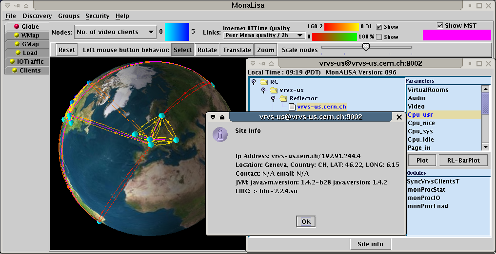
Info window for a node.
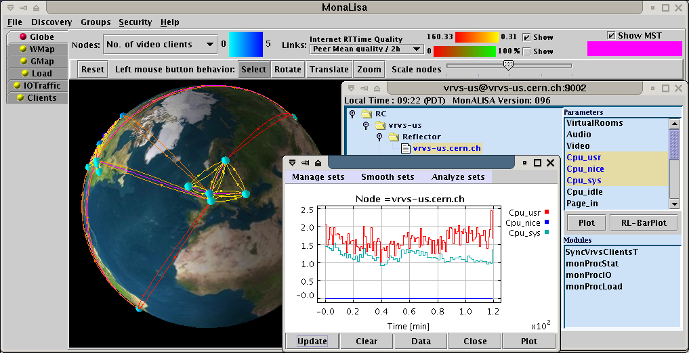
ABPing connectivity map together with an analisys of the CPU usage.
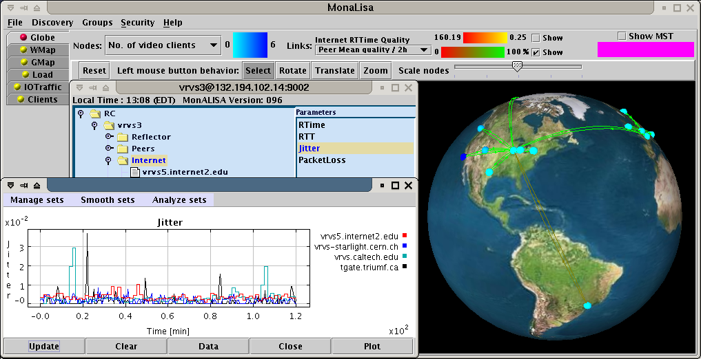
Links jitter computed by ABPing.

History analisys of the peer links quality obtained from the reflectors.
|